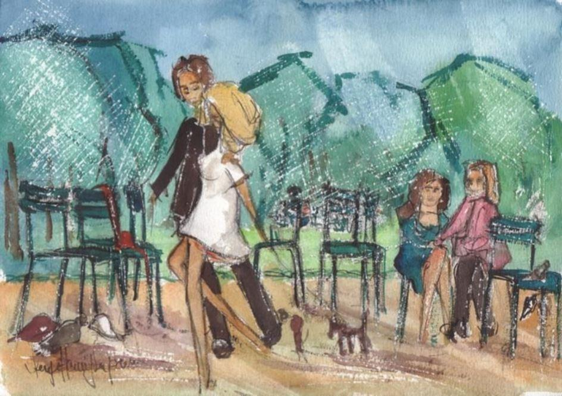

Les ronds se tirent vite. Tout ça n’est pas nouveau, non. Mais depuis peu, ça s’est corsée, la vitesse à laquelle l’argent coule. De plus en plus leste, virevoltante et fatale, la monnaie : tirer sur chaque dépense jusqu’à la fin du mois, c’est devenu une façon d’être seul au monde. On y arrive en tirant par ci, par-là, les bouquins, les plaquettes de beurre, les chaussettes. Geste furtif, et hop. Le franc est en train de vivre ses dernières années. Une clique d’économistes parie sur l’euro à venir. Comme ça, tout ça, paraît abstrait, lointain. Situation précaire, certes, que la sienne : tester la méthode torcheculative de Rabelais sur des infirmes moteurs et cérébraux dans une banlieue parisienne dont on vient juste de changer le nom, tu vois, de Les Gonesses à en France, comme si pour améliorer le sort des pauvres il suffisait de changer de nom… Et puis les occuper comme tu peux, les infirmes, ça s’appelle éducateur, il fait le job, comme on dit à présent des footballeurs, alors qu’il n’a même pas le diplôme en poches : avec la rigueur, mot depuis peu entré en fonction, on regarde plus trop nulle part qui fait quoi.
La seule conclusion qu’il en a tirée, c’est qu’au moins pour surnager, s’il doit vivre encore longtemps, durer, et sait-on jamais une vie, parfois ça dure, il faudrait reprendre des études, ces sacrées études qui lui ont toujours tant coûté, comme si tenir en place à écouter des faux savants, non vraiment.
Parce que de véritables études pour lui jusqu’alors, ça restait quand même l'école de la rue, celle de la route, de la scène, et puis les petits jobs par ci, par-là, d’usines en administrations, d’hôpitaux en commerces, le boulot, la démerde et la débine à chaque fois remise au lendemain. La scène et le carnet de notes, et toujours tout recommencer. Engagé dans rien, endetté de rien. Survivre en temps de crise. Tenir bon. Rien devoir à personne.
Je raconte donc l’histoire d’un étudiant tardif et fauché. Tu imagineras que la scène se passe au printemps 1986. Cet éternel instable trime donc dans un foyer pour handicapés à Tremblay trois journées de treize heures, avant l’ère de la sinistre Aubry, ça faisait 39, la semaine pour tout dire. Depuis peu, la situation dans le pays s’est durcie. Elle en finira plus de se durcir, au fur et à mesure qu’on ouvrirait les frontières et ferait monnaie commune et qu’on l’aurait dans le cul, la situation. Le bel enfumage.
Plus la même insouciance, non : Ni dans la capitale ni ailleurs. A moins que ce soit lui, depuis qu’il a vraiment réalisé dans sa chair de mortel qu’il est tout seul au monde, que c’est leur lot à tous, que se croire en famille c’est quand même un sacré luxe, et que trois rides lui barrent le front, à moins que ce soit lui qui finalement se soit rendu, ait accepté que ça irait peut-être mieux en retroussant les manches et en roulant une bonne fois pour toutes pour sa bosse par les sentiers de l'insertion.
Il a suivi ce jour-là la rue des Écoles jusqu’à son extrémité, son bout. Il a passé la fière Sorbonne toute de pierres vêtue, le cœur-Villon pincé, il a filé devant le Collège de France dans le jardin duquel rêve, oui c’est le mot vraiment, rêve Montaigne, et comme on n’a pas voulu de son dossier à la Sorbonne –déjà trop vieux – il a poussé jusqu’aux tours si laides en face du Nemrod, ce campus hâtivement bâti. Il a d’abord bu un café, puis deux pour se remonter le moral, ah que n’a-t-il étudié du temps de sa jeunesse folle ? Dans la rumeur des conversations, le cliquetis de cuillers à café dans les tasses vertes que sur leurs plateaux ronds des garçons en pantalons noirs, tabliers blancs, trimballent comme s'il était en train de s'égarer dans une page de Sartre.
Un rendez-vous avec le Président de Paris VII, rien que ça, à quoi ça ressemble, un président de Paris VII songe-t-il en laissant traîner son regard sur ces tours salies dans la brume qui ressemblent à un coin de banlieue planté par mégarde à deux pas de Notre-Dame.
Finalement ça a marché. Il a fait valoir la compagnie théâtrale créée jadis, l’ouverture rectorale accordée à cette époque, un bouquin édité en 81, plusieurs articles sur une ou deux pièces, tout ça, il n’en revient pas, le président de Paris VII lui a dit : « vous n’allez pas perdre un an pour rien, ça peut faire une équivalence professionnelle tout ce que vous me racontez là, vous n’avez plus de temps à perdre… » Une équivalence professionnelle ? Alors qu’il n’a pas suivi un seul cours, le voilà déjà en deuxième année, le voilà les deux jours de la semaine qui lui restent après les trois perdus chez les handicapés, à suivre un cours sur La Religieuse, un autre sur La Peau de Chagrin, et le plaisir de retrouver ce latin qu’il n’a jamais vraiment égaré depuis son cher et vieux lycée de province, le Pollio de Virgile et le Pro Archia de Cicéron. En septembre, les bombes ont pété rue de Rennes, à la Fnac où il va chercher les bouquins qui lui manquent. Comme c’est curieux, ça. Il lit la Poétique d’Aristote tandis que des passants innocents, non loin, payent la facture d’Eurodif, et Chirac, le soir, avec du sang sur les mains qu’on ne voit pas, mais tous ces rictus qu’on voit : « mes chers compatriotes », on dirait un Homais désappointé. A cette époque, il lit tout le temps, comme on respire. Quand il marche dans Paris, c’est la force des auteurs qui le portent, exactement ça, et lui montrent les magasins d’aujourd’hui, le délabrement dans lequel les êtres sont. Ce qui fait que ce qu’il dit quand il ouvre la bouche n’est pas toujours clair, branché au bon endroit. Qu’importe, se dit-il. Autour de lui, ça ne compte plus. Aucun ne l’aidera à survivre, à trouver salaire et pitance, rien d’autre que lire. Pas de temps à perdre. Plus de temps. Un prof, un jour, en lui rendant une copie lui dit : « vous, il faut passer l’agrégation, et vite… » Comme si tout à coup, au son de cette voix, il rentrait à la maison... Comme si passer l’agrégation n’était au fond qu'une formalité ressurgie du néant.
Le voilà donc dans cet amphi où résonne un cours de licence. Enfin, un cours… On vient de la Sorbonne, on vient de l’ENS, on vient de Censier, de partout pour écouter la star. La star de Jussieu. Même à Paris, flotte quelque chose d’atrocement provincial, se dit-il. Il s’est inscrit à son cours parce qu’il n’a pas de temps à perdre. Les stars l’emmerdent, l’ont toujours emmerdé, celle-ci comme d’autres, on dirait une madame de Bargeton égarée là devant ces Rubempré niais à mourir, mais il paraît que K…, contre un exposé bien ficelé, refile facilement l’unité de valeur. Et ça, il en a besoin. Comme il a besoin de monnaie. La sémiologie et lui, jusqu’alors, les théories du signe… De la Bible jusqu’à James Joyce, rien que ça, a-t-elle annoncé avant de distribuer à tous les auditeurs une liste d’exposés, comme si elle marchait sur la lune.
K… est une fort jolie eurasienne, jadis trotskiste et parvenue avec la grâce d’une papesse de la gauche mitterrandienne dans ce qu’il est convenu de nommer la force de l’âge. Lui, il a tiré au sort « la théorie du signe dans la Logique de Port-Royal ». Diable ! Arnauld, Nicole, et cette affaire de raison janséniste, le jugement. Voilà de quoi l’occuper quand il garderait cette semaine les fauteuils au foyer. Jongler avec les syllogismes. Les mater. Ah, les mots considérés « comme des objets de pensée » et ceux qui ne font que renvoyer « à la forme et à la manière de nos pensées ». Ceux qui et ceux qui ne font que. Tout est là. S’il y a une théorie plausible là-dedans, nous partirons d’une prémisse remarquable, c’est qu’elle ignore l’arbitraire. Au sortir du métro, déjà des bradeurs d’écharpes étalées à même le sol. Il ya toujours eu des vendeurs à la sauvette, des vendeurs de tout, et puis des musiciens. La débrouille. Ces écharpes écossaises, à 20 francs l’une, il en portait d’ailleurs une en ce mois de février – ça devait être 1988 – qui commençait à s'effiler, nouée autour du cou, grise, blanche et noire, et qui gardait son odeur rance et tenace à lui, son propre parfum comme en conserve, qu’il humait dans la journée, comme on hume une superstition. Comme deux chiens affamés, Mitterrand et Chirac allaient se jeter à la gueule l’un de l’autre la libération des otages, toujours cette sale histoire de l’uranium et des millions d’Eurodif, « les yeux dans les yeux je le conteste », on s’en souvient, Dieu-Grenouille serait réélu, et Libération, le journal que lisait K… et dans lequel elle-même et les gus de sa bande écrivaient parfois des articles d’indignés titrerait bravo l’artiste, et le pays berné. La décomposition de l’artiste, comme celle du pays, galopante
Un jour, son tour vint d’aller mendier son 18/20 devant la bruissante assemblée. Pendant que les strapontins claquaient, miroir de poche en main, Julia se refaisait une beauté habile. Car elle commence à avoir l’Eurasie fatiguée, ça se comprend. Derrière elle, le tableau est empli d’équations et sur le bureau est posé le chiffon pour effacer les traces de ceux qui nous ont précédés. C’est ça, la connaissance, un long chemin. Il avance la main pour s’en saisir, de ce chiffon empli de poussière blanche, et au tout dernier moment s’aperçoit qu’en réalité, ce chiffon est une écharpe, une vraie, comme celle qu’il porte à son cou. Une de ces écharpes que les pauvres vendent au noir à des pauvres dans le métro, vingt balles, oui, on disait alors vingt balles, vendre comme on jouerait de la guitare et la porter de longs jours jusqu’à ce qu’elle sente l’odeur, ton odeur. Il hésite.
K… fait une moue et pose sur sa main à lui qu’il vient d’immobiliser devant cette foutue écharpe ? ce maudit chiffon ? il ne sait plus qu’en penser. Elle pose son regard aux longs cils et c’est vrai qu’il est beau et profond, ce regard qu’elle laisse glisser le long de son avant-bras à lui, son bras, sa bouche, ses yeux maintenant, elle le fixe quelques secondes tandis qu’il rosit, pris en flagrant délit de pauvreté. Et elle, l’universitaire qui théorisa si joliment les lois les plus retorses du langage et de la Révolution, d’une voix sèche, sucrée, tombant comme un couperet lâche : « Vous ne pensez tout de même pas que cette écharpe est à moi ? »
Je dédie cette fable à toutes celles et tous ceux qui galèrent pour mener à terme quelques études leur permettant (peut-être) de survivre dans la Jungle.
Partager cette page